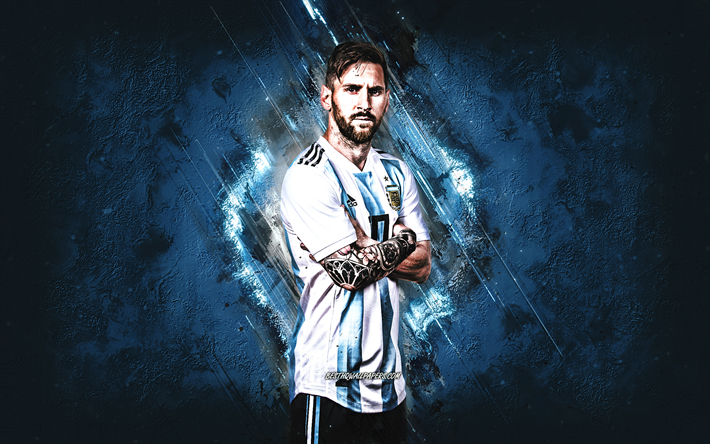

Messi is a argentine professional footballer who plays forward and captain for FC Barcelona and Argentina. Messi is considered the best player in the world and widely regarded as one of the greatest players of all time. Born and raised in central Argentina, Messi was diagnosed with a growth hormone deficiency as a child. At age 13 he relocated to Spain to join Barcelona, who agreed to pay for his medical treatment. After a fast progression through Barcelona's youth academy,Messi made his competitive debut aged 17 in October 2004. Despite being injury-prone during his early career, he established himself as an integral player for the club within the next three years, finishing 2007 as a finalist for both the Ballon d'Or and FIFA World Player of the Year award, a feat he repeated the following year. During the 2011–12 season, he set the La Liga and European records for most goals scored in a single season, while establishing himself as Barcelona's all-time top scorer in official competitions in March 2012.
